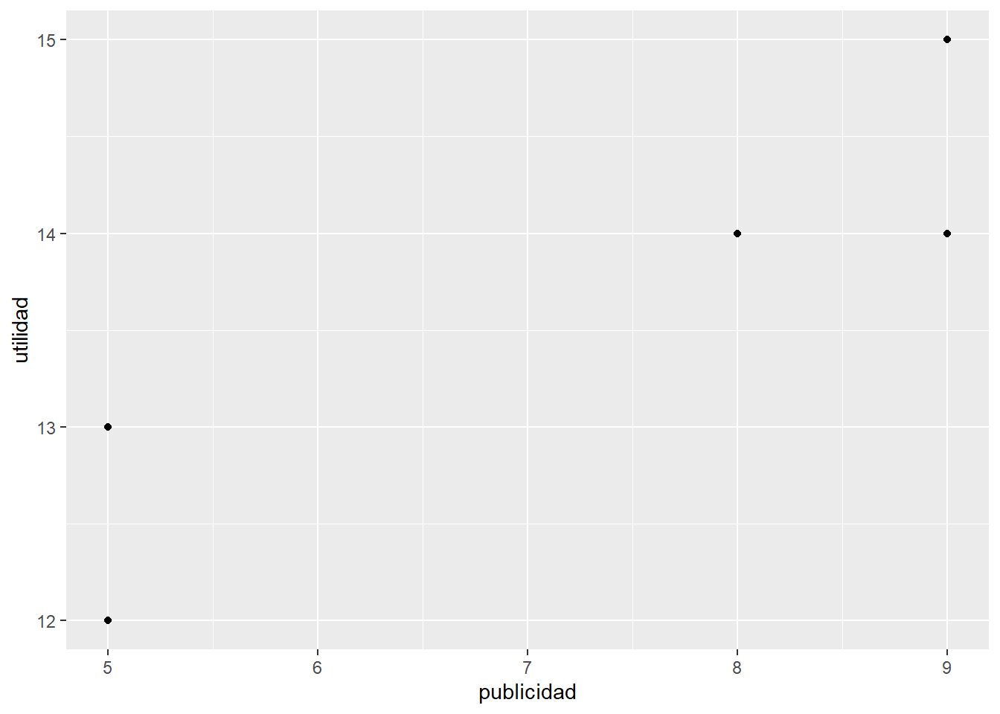

Sección 9 Un modelo lineal “sencillo” (regresión lineal)
9.1 Objetivo
Construir un modelo lineal para realizar una predicción. Aquí esta predicción se refiere a un puntaje (score) que refleja la eficiencia de un carro con respecto al consumo de gasolina.
9.2 Cargar datos sobre carros
- Utilizar el dataset mtcars, que viene con la instalación de R: data(“mtcars”)
- Primero, analizar estos datos con la función View()
- Asignar estos datos a un data frame “df” y
- Mostrar las primeras seis filas de df y adicionalmente
- mostrar la clase de “df”
data("mtcars")
View(mtcars)
df <- mtcars
head(df)## mpg cyl disp hp drat wt qsec vs am gear carb
## Mazda RX4 21.0 6 160 110 3.90 2.620 16.46 0 1 4 4
## Mazda RX4 Wag 21.0 6 160 110 3.90 2.875 17.02 0 1 4 4
## Datsun 710 22.8 4 108 93 3.85 2.320 18.61 1 1 4 1
## Hornet 4 Drive 21.4 6 258 110 3.08 3.215 19.44 1 0 3 1
## Hornet Sportabout 18.7 8 360 175 3.15 3.440 17.02 0 0 3 2
## Valiant 18.1 6 225 105 2.76 3.460 20.22 1 0 3 1class(df) # data.frame## [1] "data.frame"- Colocar los nombres de los modelos de los carros en una primera columna (columna adicional) del data frame “df.” Esta nueva columna debe tener el nombre (título) “modelos”
- Esto se puede lograr combinando la función cbind(), que une columnas, con la función rownames(), que devuelve los nombre de las filas de un data frame
- Luego, analizar las primeras seis filas de “df”
df <- cbind(modelos = rownames(df), df)
head(df)## modelos mpg cyl disp hp drat wt qsec vs am
## Mazda RX4 Mazda RX4 21.0 6 160 110 3.90 2.620 16.46 0 1
## Mazda RX4 Wag Mazda RX4 Wag 21.0 6 160 110 3.90 2.875 17.02 0 1
## Datsun 710 Datsun 710 22.8 4 108 93 3.85 2.320 18.61 1 1
## Hornet 4 Drive Hornet 4 Drive 21.4 6 258 110 3.08 3.215 19.44 1 0
## Hornet Sportabout Hornet Sportabout 18.7 8 360 175 3.15 3.440 17.02 0 0
## Valiant Valiant 18.1 6 225 105 2.76 3.460 20.22 1 0
## gear carb
## Mazda RX4 4 4
## Mazda RX4 Wag 4 4
## Datsun 710 4 1
## Hornet 4 Drive 3 1
## Hornet Sportabout 3 2
## Valiant 3 19.3 Crear el modelo lineal (regresión lineal)
- Generar un modelo de una regresión lineal, utilizando la función lm() y
- asignar el resultado del modelo a una variable (objeto) “lin.mod”
- Generar el modelo con las siguientes variables de entrada: cyl + wt + hp
- Investigar primero sobre esta función “lm” (con F1) antes de utilizarla.
- Finalmente, mostrar el contenido de lin.mod (del modelo construido) en la pantalla, utilizando la función print()
lin.mod <- lm(mpg ~ cyl + wt + hp, data = df)
print(lin.mod)##
## Call:
## lm(formula = mpg ~ cyl + wt + hp, data = df)
##
## Coefficients:
## (Intercept) cyl wt hp
## 38.75179 -0.94162 -3.16697 -0.01804- Revisar el resumen (estadístico) del modelo lineal generado, que arroja los coeficientes y el “valor p” para cada variable.
- ¿Cómo se interpretan los “valores p?”
summary(lin.mod)##
## Call:
## lm(formula = mpg ~ cyl + wt + hp, data = df)
##
## Residuals:
## Min 1Q Median 3Q Max
## -3.9290 -1.5598 -0.5311 1.1850 5.8986
##
## Coefficients:
## Estimate Std. Error t value Pr(>|t|)
## (Intercept) 38.75179 1.78686 21.687 < 2e-16 ***
## cyl -0.94162 0.55092 -1.709 0.098480 .
## wt -3.16697 0.74058 -4.276 0.000199 ***
## hp -0.01804 0.01188 -1.519 0.140015
## ---
## Signif. codes: 0 '***' 0.001 '**' 0.01 '*' 0.05 '.' 0.1 ' ' 1
##
## Residual standard error: 2.512 on 28 degrees of freedom
## Multiple R-squared: 0.8431, Adjusted R-squared: 0.8263
## F-statistic: 50.17 on 3 and 28 DF, p-value: 2.184e-119.4 Realizar una predicción
- Realizar una predicción, utilizando el modelo generado (“lin.mod”) y la función predict() y
- asignar el resultado a una variable “mpgScore” como columna adicional del data frame “df.” Donde mpg = miles per galón.
- Esta función predict () requiere dos parámetros: Un modelo (aquí: lin.mod) y datos (aquí: “df”")
- Nota: El resultado de la predicción se refiere a un puntaje (score) que refleja la cantidad de millas que corre un carro con un galón de gasolina. Es decir, el score se refiere a la eficiencia de un carro con respecto al consumo de gasolina.
- Luego, analizar las primeras seis filas del data frame df, y en particular los valores de la nueva columna “mpgScore”
df$mpgScore <- predict(lin.mod, df)
head(df)## modelos mpg cyl disp hp drat wt qsec vs am
## Mazda RX4 Mazda RX4 21.0 6 160 110 3.90 2.620 16.46 0 1
## Mazda RX4 Wag Mazda RX4 Wag 21.0 6 160 110 3.90 2.875 17.02 0 1
## Datsun 710 Datsun 710 22.8 4 108 93 3.85 2.320 18.61 1 1
## Hornet 4 Drive Hornet 4 Drive 21.4 6 258 110 3.08 3.215 19.44 1 0
## Hornet Sportabout Hornet Sportabout 18.7 8 360 175 3.15 3.440 17.02 0 0
## Valiant Valiant 18.1 6 225 105 2.76 3.460 20.22 1 0
## gear carb mpgScore
## Mazda RX4 4 4 22.82043
## Mazda RX4 Wag 4 4 22.01285
## Datsun 710 4 1 25.96040
## Hornet 4 Drive 3 1 20.93608
## Hornet Sportabout 3 2 17.16780
## Valiant 3 1 20.250369.5 Un segundo ejemplo sencillo
9.5.1 Utilidad en función del gasto para publicidad
Los datos:
utilidades: 13, 14, 12, 14, 15 (millones $)
publicadad: 5, 9, 5, 8, 9 (millones $)
Generar un data frame con estos datos
utilidad <- c(13, 14, 12, 14, 15)
publicidad <- c(5, 9, 5, 8, 9)
datosPubl <- data.frame(utilidad, publicidad)
print(datosPubl)## utilidad publicidad
## 1 13 5
## 2 14 9
## 3 12 5
## 4 14 8
## 5 15 9- Graficar, utilizando el paquete ggplot2, la dispersión de los datos (publicidad vs utilidad)
library(ggplot2)
ggplot(datosPubl, aes(x = publicidad, y = utilidad)) + geom_point()
- Generar el modelo de una regresión lineal con la función lm() y asignar el resultado a una variable modelo.lineal
modelo.lineal <- lm(utilidad ~ publicidad, data = datosPubl)- Generar el resumen estadístico del modelo generado
summary(modelo.lineal)##
## Call:
## lm(formula = utilidad ~ publicidad, data = datosPubl)
##
## Residuals:
## 1 2 3 4 5
## 5.000e-01 -5.000e-01 -5.000e-01 3.608e-16 5.000e-01
##
## Coefficients:
## Estimate Std. Error t value Pr(>|t|)
## (Intercept) 10.0000 1.0465 9.555 0.00243 **
## publicidad 0.5000 0.1409 3.550 0.03810 *
## ---
## Signif. codes: 0 '***' 0.001 '**' 0.01 '*' 0.05 '.' 0.1 ' ' 1
##
## Residual standard error: 0.5774 on 3 degrees of freedom
## Multiple R-squared: 0.8077, Adjusted R-squared: 0.7436
## F-statistic: 12.6 on 1 and 3 DF, p-value: 0.0381- Mostrar los coeficientes para el modelo generado
modelo.lineal$coefficients## (Intercept) publicidad
## 10.0 0.5- Supuesto: $ 12 (millones) de gasto para publicidad
- Ahora, utilizar los coefficientes para indicar, cuánta utilidad generan estos 12 millones de publicidad, segun este modelo lineal
10 + 0.5 * 12 # 16## [1] 16# Es decir, con 12 millones de publicidad se generan 16 millones de utilidad